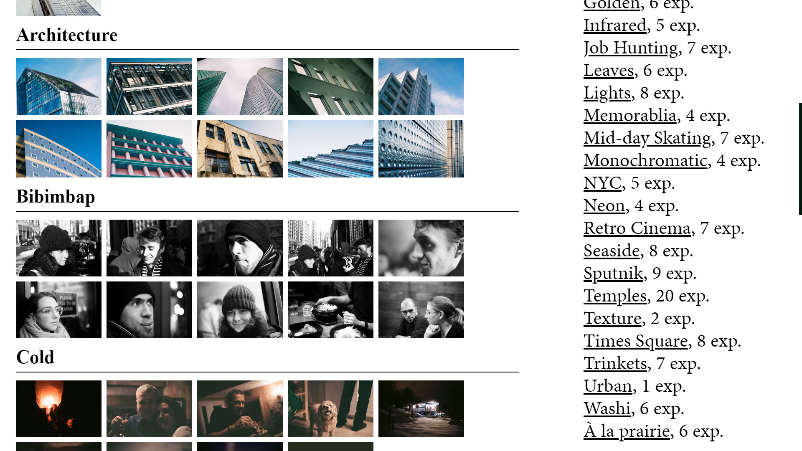
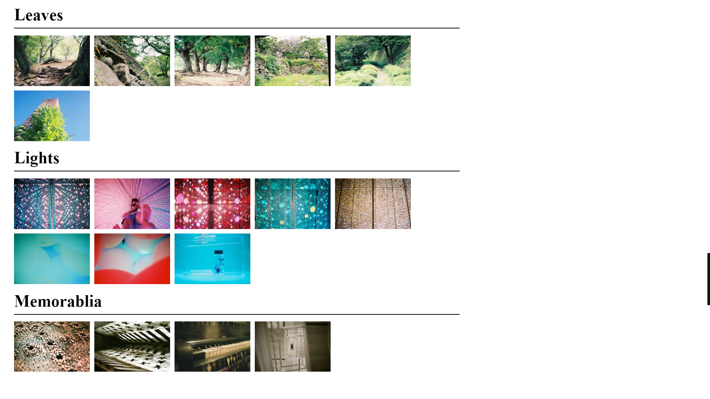
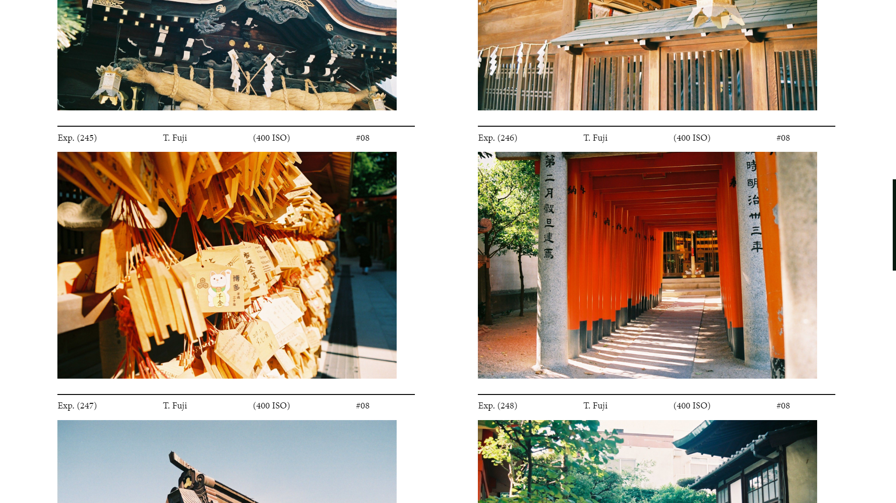
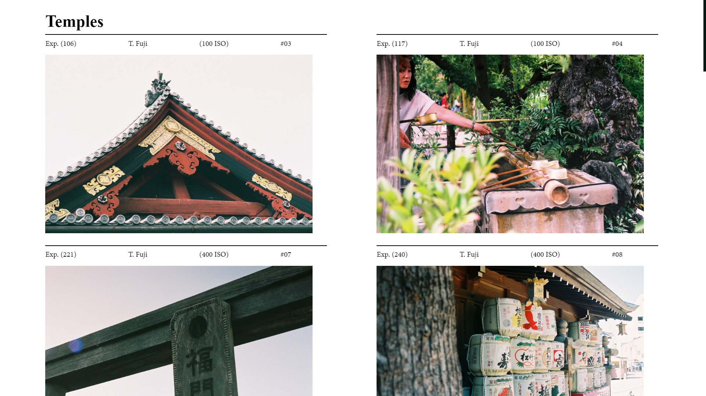
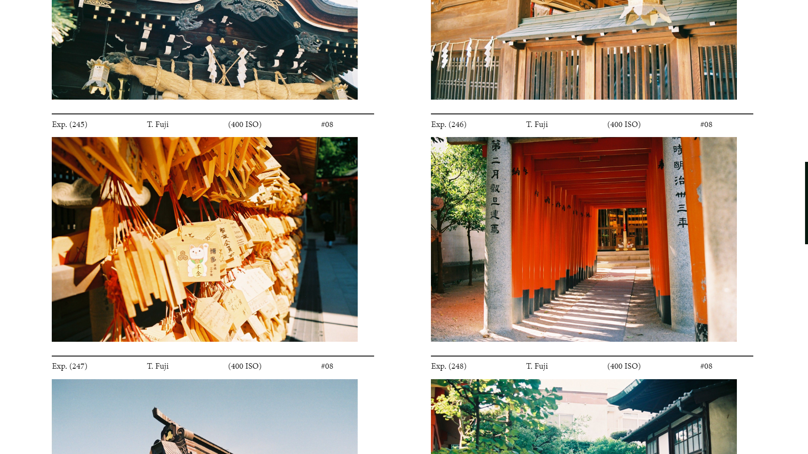
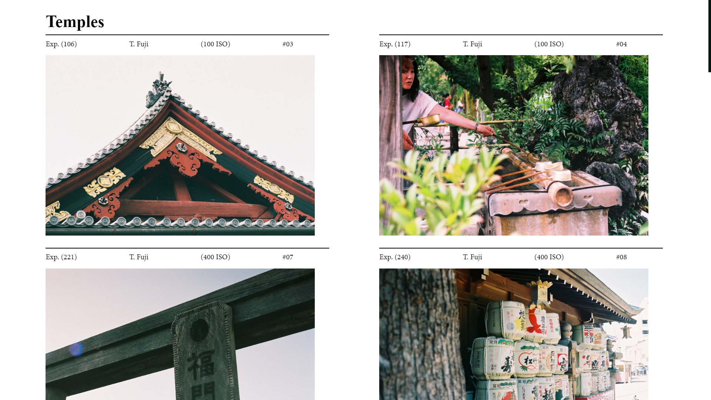

05/19 Lumograph

For analog photographers
Lumograph is a web app, built on Node.js, to archive, sort and showcase film photos from indie analog photographers. Photographers first batch archive their photos to create a JSON registry of all the photos taken. This is done through Lumograph's archiving system which looks through the photo folders and sorts them through their name. The app follows a naming convention of ROLLNUMBER_ROLLTYPE_ISO to sort the photo (e.g 12_FUJI_100). The user then creates "Collections", which are curated albums of photos they want to showcase, by creating a folder locally with the photos in it. The changes are pushed online and the app automatically cross references the collection photos with the archive to display the photo information.
Design Philosophy
Lumograph is a web app, built on Node.js, to archive, sort and showcase film photos from indie analog photographers. Photographers first batch archive their photos to create a JSON registry of all the photos taken. This is done through Lumograph's archiving system which looks through the photo folders and sorts them through their name. The app follows a naming convention of ROLLNUMBER_ROLLTYPE_ISO to sort the photo (e.g 12_FUJI_100). The user then creates "Collections", which are curated albums of photos they want to showcase, by creating a folder locally with the photos in it. The changes are pushed online and the app automatically cross references the collection photos with the archive to display the photo information.
 



Collection View
Navigating to a collection brings you to the collection view which displays the frame information for those particular exposures. The current format is "Exp.###" (the unique ID of that frame), Roll Type, ISO setting and the Roll it belongs to (specified by a roll number).

Archiving
The archive section contains the record of all registered pictures with their metadata. It supports the recording of the exposure #, roll type, ISO, film size, location and the lab used to develop the film.